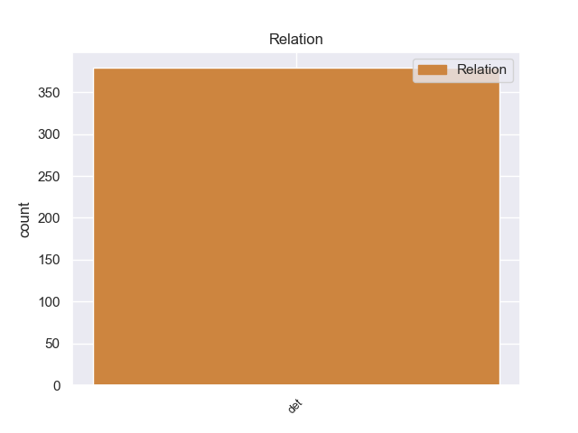
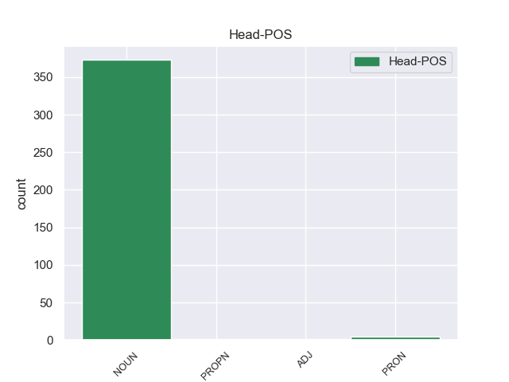
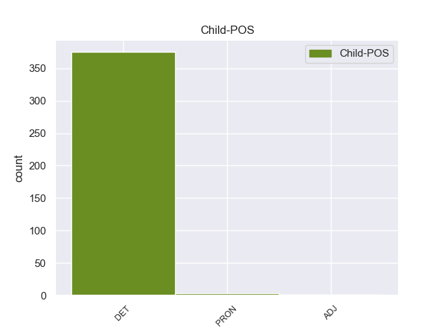

Distribution of features within this leaf



Agreement Rules sorted by frequency.
- When the dependent token is the determiner(det) of the head token, and the head token is NOUN
1 पत्रिका _ _ _ _ 0 _ _ _
2 के _ _ _ _ 0 _ _ _
3 अनुसार _ _ _ _ 0 _ _ _
4 खान _ _ _ _ 0 _ _ _
5 की _ _ _ _ 0 _ _ _
6 इन यह DET DEM Case=Acc|Number=Plur|Person=3|PronType=Dem 7 det _ ChunkId=NP3|ChunkType=child|Translit=ina
7 यात्राओं यात्रा NOUN NN Case=Acc|Gender=Fem|Number=Plur|Person=3 0 _ _ _
8 का _ _ _ _ 0 _ _ _
9 उद्देश्य _ _ _ _ 0 _ _ _
10 अभी _ _ _ _ 0 _ _ _
11 तक _ _ _ _ 0 _ _ _
12 स्पष्ट _ _ _ _ 0 _ _ _
13 नहीं _ _ _ _ 0 _ _ _
14 है _ _ _ _ 0 _ _ _
15 , _ _ _ _ 0 _ _ _
16 लेकिन _ _ _ _ 0 _ _ _
17 खुफिया _ _ _ _ 0 _ _ _
18 अधिकारियों _ _ _ _ 0 _ _ _
19 का _ _ _ _ 0 _ _ _
20 मानना _ _ _ _ 0 _ _ _
21 है _ _ _ _ 0 _ _ _
22 कि _ _ _ _ 0 _ _ _
23 सऊदी _ _ _ _ 0 _ _ _
24 अरब _ _ _ _ 0 _ _ _
25 और _ _ _ _ 0 _ _ _
26 मिस्र _ _ _ _ 0 _ _ _
27 परमाणु _ _ _ _ 0 _ _ _
28 तक़नीक _ _ _ _ 0 _ _ _
29 की _ _ _ _ 0 _ _ _
30 तलाश _ _ _ _ 0 _ _ _
31 में _ _ _ _ 0 _ _ _
32 हैं _ _ _ _ 0 _ _ _
33 और _ _ _ _ 0 _ _ _
34 कई _ _ _ _ 0 _ _ _
35 अफ्रीकी _ _ _ _ 0 _ _ _
36 देश _ _ _ _ 0 _ _ _
37 कच्चे _ _ _ _ 0 _ _ _
38 यूरेनियम _ _ _ _ 0 _ _ _
39 संपन्न _ _ _ _ 0 _ _ _
40 हैं _ _ _ _ 0 _ _ _
41 । _ _ _ _ 0 _ _ _
1 यह यह DET DEM Case=Nom|Number=Sing|Person=3|PronType=Dem 2 det _ ChunkId=NP|ChunkType=child|Translit=yaha
2 सब सब PRON PRP Case=Nom|Number=Plur|Person=3|PronType=Prs 0 _ _ _
3 हमारी _ _ _ _ 0 _ _ _
4 प्रतिबद्धता _ _ _ _ 0 _ _ _
5 , _ _ _ _ 0 _ _ _
6 श्रम _ _ _ _ 0 _ _ _
7 और _ _ _ _ 0 _ _ _
8 प्रयासों _ _ _ _ 0 _ _ _
9 से _ _ _ _ 0 _ _ _
10 संभव _ _ _ _ 0 _ _ _
11 हो _ _ _ _ 0 _ _ _
12 सकेगा _ _ _ _ 0 _ _ _
13 । _ _ _ _ 0 _ _ _
1 हालांकि _ _ _ _ 0 _ _ _
2 उन्होंने _ _ _ _ 0 _ _ _
3 बताया _ _ _ _ 0 _ _ _
4 कि _ _ _ _ 0 _ _ _
5 मूल _ _ _ _ 0 _ _ _
6 वेतन _ _ _ _ 0 _ _ _
7 में _ _ _ _ 0 _ _ _
8 महंगाई _ _ _ _ 0 _ _ _
9 भत्ते _ _ _ _ 0 _ _ _
10 के _ _ _ _ 0 _ _ _
11 विलय _ _ _ _ 0 _ _ _
12 को _ _ _ _ 0 _ _ _
13 केवल _ _ _ _ 0 _ _ _
14 उन्हीं वह DET DEM Case=Acc|Number=Plur|Person=3|PronType=Dem 15 det _ ChunkId=NP5|ChunkType=child|Translit=unhīṁ
15 पीएसयू पीएसयू PROPN NNP Case=Acc|Gender=Masc|Number=Plur|Person=3 0 _ _ _
16 में _ _ _ _ 0 _ _ _
17 लागू _ _ _ _ 0 _ _ _
18 किया _ _ _ _ 0 _ _ _
19 जाएगा _ _ _ _ 0 _ _ _
20 जो _ _ _ _ 0 _ _ _
21 कि _ _ _ _ 0 _ _ _
22 बढ़े _ _ _ _ 0 _ _ _
23 हुए _ _ _ _ 0 _ _ _
24 वेतन _ _ _ _ 0 _ _ _
25 को _ _ _ _ 0 _ _ _
26 देने _ _ _ _ 0 _ _ _
27 में _ _ _ _ 0 _ _ _
28 सक्षम _ _ _ _ 0 _ _ _
29 हैं _ _ _ _ 0 _ _ _
30 । _ _ _ _ 0 _ _ _
1 इस _ _ _ _ 0 _ _ _
2 मामले _ _ _ _ 0 _ _ _
3 में _ _ _ _ 0 _ _ _
4 नौ _ _ _ _ 0 _ _ _
5 जून _ _ _ _ 0 _ _ _
6 को _ _ _ _ 0 _ _ _
7 इस _ _ _ _ 0 _ _ _
8 उच्च उच्च ADJ JJC Case=Acc 9 det _ ChunkId=NP3|ChunkType=child|Translit=ucca
9 स्तरीय स्तरीय ADJ JJ Case=Acc 0 _ _ _
10 कमेटी _ _ _ _ 0 _ _ _
11 की _ _ _ _ 0 _ _ _
12 होने _ _ _ _ 0 _ _ _
13 वाली _ _ _ _ 0 _ _ _
14 बैठक _ _ _ _ 0 _ _ _
15 के _ _ _ _ 0 _ _ _
16 ऊपर _ _ _ _ 0 _ _ _
17 सबकी _ _ _ _ 0 _ _ _
18 निगाहें _ _ _ _ 0 _ _ _
19 लगी _ _ _ _ 0 _ _ _
20 हुई _ _ _ _ 0 _ _ _
21 हैं _ _ _ _ 0 _ _ _
22 । _ _ _ _ 0 _ _ _
Disagree Examples:
1 इस यह DET DEM Case=Acc|Number=Sing|Person=3|PronType=Dem 2 det _ ChunkId=NP|ChunkType=child|Translit=isa
2 समय समय NOUN NN Case=Nom|Gender=Masc|Number=Sing|Person=3 0 _ _ _
3 आप _ _ _ _ 0 _ _ _
4 यहाँ _ _ _ _ 0 _ _ _
5 लोकतांत्रिक _ _ _ _ 0 _ _ _
6 अमेरिका _ _ _ _ 0 _ _ _
7 को _ _ _ _ 0 _ _ _
8 ओरलैंडों _ _ _ _ 0 _ _ _
9 की _ _ _ _ 0 _ _ _
10 नजर _ _ _ _ 0 _ _ _
11 से _ _ _ _ 0 _ _ _
12 बेहद _ _ _ _ 0 _ _ _
13 खूबसूरत _ _ _ _ 0 _ _ _
14 लाल _ _ _ _ 0 _ _ _
15 - _ _ _ _ 0 _ _ _
16 नीले _ _ _ _ 0 _ _ _
17 औऱ _ _ _ _ 0 _ _ _
18 सफेद _ _ _ _ 0 _ _ _
19 रंग _ _ _ _ 0 _ _ _
20 में _ _ _ _ 0 _ _ _
21 निहार _ _ _ _ 0 _ _ _
22 सकते _ _ _ _ 0 _ _ _
23 हैं _ _ _ _ 0 _ _ _
24 । _ _ _ _ 0 _ _ _
1 तरुण _ _ _ _ 0 _ _ _
2 ने _ _ _ _ 0 _ _ _
3 इस _ _ _ _ 0 _ _ _
4 बात _ _ _ _ 0 _ _ _
5 को _ _ _ _ 0 _ _ _
6 इस यह DET DEM Case=Acc|Number=Sing|Person=3|PronType=Dem 7 det _ ChunkId=NP3|ChunkType=child|Translit=isa
7 तरह तरह NOUN NN Case=Nom|Gender=Fem|Number=Sing|Person=3 0 _ _ _
8 पेश _ _ _ _ 0 _ _ _
9 किया _ _ _ _ 0 _ _ _
10 - _ _ _ _ 0 _ _ _
11 कुछ _ _ _ _ 0 _ _ _
12 लोगों _ _ _ _ 0 _ _ _
13 ने _ _ _ _ 0 _ _ _
14 मुझे _ _ _ _ 0 _ _ _
15 बताया _ _ _ _ 0 _ _ _
16 कि _ _ _ _ 0 _ _ _
17 हमारा _ _ _ _ 0 _ _ _
18 काम _ _ _ _ 0 _ _ _
19 काफी _ _ _ _ 0 _ _ _
20 मिलता _ _ _ _ 0 _ _ _
21 जुलता _ _ _ _ 0 _ _ _
22 है _ _ _ _ 0 _ _ _
23 । _ _ _ _ 0 _ _ _
1 यह _ _ _ _ 0 _ _ _
2 सारी _ _ _ _ 0 _ _ _
3 जानकारियां _ _ _ _ 0 _ _ _
4 ६ _ _ _ _ 0 _ _ _
5 दिसंबर _ _ _ _ 0 _ _ _
6 तक _ _ _ _ 0 _ _ _
7 देने _ _ _ _ 0 _ _ _
8 को _ _ _ _ 0 _ _ _
9 कहा _ _ _ _ 0 _ _ _
10 है _ _ _ _ 0 _ _ _
11 और _ _ _ _ 0 _ _ _
12 हाई _ _ _ _ 0 _ _ _
13 कोर्ट _ _ _ _ 0 _ _ _
14 के _ _ _ _ 0 _ _ _
15 रजिस्ट्रार _ _ _ _ 0 _ _ _
16 जनरल _ _ _ _ 0 _ _ _
17 को _ _ _ _ 0 _ _ _
18 उस वह DET DEM Case=Acc|Number=Sing|Person=3|PronType=Dem 19 det _ ChunkId=NP5|ChunkType=child|Translit=usa
19 दिन दिन NOUN NN Case=Nom|Gender=Masc|Number=Sing|Person=3 0 _ _ _
20 व्यक्तिगत _ _ _ _ 0 _ _ _
21 रूप _ _ _ _ 0 _ _ _
22 से _ _ _ _ 0 _ _ _
23 कोर्ट _ _ _ _ 0 _ _ _
24 में _ _ _ _ 0 _ _ _
25 पेश _ _ _ _ 0 _ _ _
26 होने _ _ _ _ 0 _ _ _
27 को _ _ _ _ 0 _ _ _
28 कहा _ _ _ _ 0 _ _ _
29 गया _ _ _ _ 0 _ _ _
30 है _ _ _ _ 0 _ _ _
31 । _ _ _ _ 0 _ _ _
1 उन्होंने _ _ _ _ 0 _ _ _
2 बताया _ _ _ _ 0 _ _ _
3 कि _ _ _ _ 0 _ _ _
4 इसी यह DET DEM Case=Acc|Number=Sing|Person=3|PronType=Dem 5 det _ ChunkId=NP2|ChunkType=child|Translit=isī
5 तरह तरह NOUN NN Case=Nom|Gender=Fem|Number=Sing|Person=3 0 _ _ _
6 पिछले _ _ _ _ 0 _ _ _
7 एक _ _ _ _ 0 _ _ _
8 साल _ _ _ _ 0 _ _ _
9 के _ _ _ _ 0 _ _ _
10 दौरान _ _ _ _ 0 _ _ _
11 ३,२३,५६३ _ _ _ _ 0 _ _ _
12 लोगों _ _ _ _ 0 _ _ _
13 ने _ _ _ _ 0 _ _ _
14 क्रेडिट _ _ _ _ 0 _ _ _
15 कार्डों _ _ _ _ 0 _ _ _
16 के _ _ _ _ 0 _ _ _
17 जरिये _ _ _ _ 0 _ _ _
18 दो _ _ _ _ 0 _ _ _
19 लाख _ _ _ _ 0 _ _ _
20 रुपये _ _ _ _ 0 _ _ _
21 से _ _ _ _ 0 _ _ _
22 भी _ _ _ _ 0 _ _ _
23 ज्यादा _ _ _ _ 0 _ _ _
24 का _ _ _ _ 0 _ _ _
25 भुगतान _ _ _ _ 0 _ _ _
26 किया _ _ _ _ 0 _ _ _
27 । _ _ _ _ 0 _ _ _
1 उस वह DET DEM Case=Acc|Number=Sing|Person=3|PronType=Dem 2 det _ ChunkId=NP|ChunkType=child|Translit=usa
2 समय समय NOUN NN Case=Nom|Gender=Masc|Number=Sing|Person=3 0 _ _ _
3 किसी _ _ _ _ 0 _ _ _
4 कारण _ _ _ _ 0 _ _ _
5 ट्रेन _ _ _ _ 0 _ _ _
6 धीमी _ _ _ _ 0 _ _ _
7 चल _ _ _ _ 0 _ _ _
8 रही _ _ _ _ 0 _ _ _
9 थी _ _ _ _ 0 _ _ _
10 . _ _ _ _ 0 _ _ _